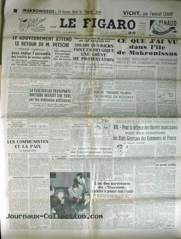
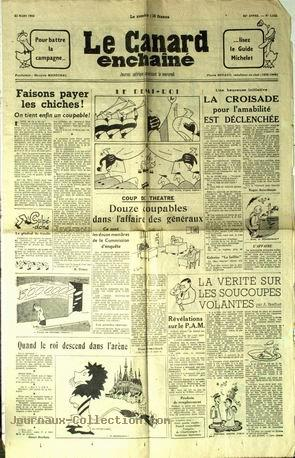
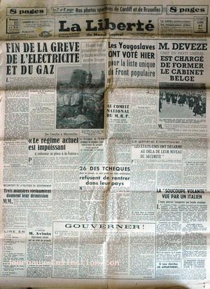

Le Figaro du 18, avec un article intitulé Pluie de "soucoupes volantes" ou averse de bolides
?
Le bureau régional du FBI de Knoxville (Tennessee),
reçoit un appel affolé d'un opérateur radar d'une base militaire voisine. Le technicien a repéré un engin survolant
la centrale de recherche atomique d'Oak Ridge.
A la base USAF de Selfridge (Michigan), le Lieutenant st
Frank Mattson observe une intense lumière d'un jaune terne descendre verticalement, puis
voler horizontalement très rapidement durant 4 mn Cas Blue Book n° 650 non expliqué.
À Dayton (Ohio), observation visuelle
et au radar d'un disque volant au-dessus de la base de Wright-Patterson, quartier général de l'ATIC.
Un équipage de la TWA confirme l'observation. La Garde Nationale est mise en alerte et 1 (2 ?) Mustang P-51 décolle(nt) pour tenter une interception, en vain.
Le phénomène du 1er mars se répéte plusieurs fois. Instauration du projet Twinkle, chargé d'enquêter sur le phénomènes des "boules
de feu vertes" au Nouveau Mexique.
A Farmington (Nouveau Mexique), des
centaines de personnes voient de nombreux phénomènes aériens non identifiés "Huge
'Saucer' Armada Jolts Farmington", Farmington Daily Times, 1950-03-18, vol. 61, n°
194.
A Lago Argentino (Argentine), Wilfredo H. Arevalo (fermier) voit 2 objets dont l'un se pose à terre. Il s'avance à pied à
moins de 150 m de l'appareil qui paraît d'aluminium et répand une vapeur bleu verdâtre en même temps qu'une intense
odeur de benzine brûlée. Au sommet une grande plate-forme tourne au-dessus d'une cabine transparente dans laquelle
on peut voir 4 hommes de grande taille, habillés de vêtements à l'apparence de la cellophane et manoeuvrant divers
instruments. Ils l'aperçoivent, braquent une lumière dans sa direction, tandis qu'une lueur bleue illumine
l'appareil. La vapeur augmente et des flammes (alternativement rougeâtres et verdâtres) jaillissent de la base
pendant que l'objet s'élève en émettant un faible bourdonnement. Les 2 appareils prennent ensemble la direction du
Chili en laissant derrière eux une traînée bleuâtre Bowen, Charles: Humanoids 32.
A Stuttgart (Arkansas), le capitaine Jack Adams et le 1er officier G. W. Anderson Junior, tous 2 de
la Chicago & Southern Airlines, observent durant un disque de 100 pieds
avec 9 à 12 ouvertures le long de la partie inférieure émettant une douce lumière pourpre, ainsi qu'une lumière à
son sommet clignotant 3 fois en , en train de voler à pas moins de 1000 miles/h Cas Blue Book n° 671 non expliqué.

Le Canard Enchaîné n° 1535 du 22, titrant sur La vérité sur les soucoupes volantesGuy Hottel (agent du FBI en poste à Washington), envoie à sa
hiérarchie un mémorandum dans lequel il dit avoir bavardé avec un enquêteur de l'armée de l'air. Cet
informateur lui dit que les forces aériennes auraient récupéré 3 soucoupes volantes au Nouveau-Mexique, chacune étant occupée par 3 corps faisant à peine 1 m de haut, habillés de combinaisons noires comme celles des pilotes d'avions supersoniquesHottel, Guy: "Information
concerning Flying Saucers", FBI, 1950-03-22Information apparemment issue des auteurs du canular de Aztec.
A Motobu (Okinawa), l'opérateur de l'USAF Cpl. Bolfango repère durant 2 mn sur son radar un objet stationnaire puis se déplaçant à 500
miles/h. Une observation visuelle a également lieu Cas Blue Book n° 678 non expliqué.
La Liberté du 27, avec un article intitulé : La "soucoupe volante" vue par un italien

A Santiago (Chili), le M/Sgt. Patterson, du bureau de l'US Air
Attache, observe aux jumelles durant un objet blanc en train de voler
rapidement à haute altitude, traversant 30° du ciel Cas Blue Book n° 680 non expliqué.
Au lac Marrowhode (Marrowbore?) (Tennessee), Whiteside et
Williams, agents immobiliers, observent de 6 à 12 objets sombres ressemblant à des bombes, d'environ 5 pieds de
long, volant à 500 miles/h et descendre, émettant un son semblable au vent soufflant dans les arbres Cas Blue Book n° 682 non expliqué.
Dans un article intitulé Untertassen-Flieger Kombination, le magazine Der Spiegel indique ...Rudolph
Schriever, qui déclare que des ingénieurs du monde entier ont fait des expériences avec des soucoupes volantes
au début des années 1940s, souhaite en construire une pour les Etats-Unis en 6 à 9 mois. Ce diplômé de
l'Université de Prague de 40 ans déclare qu'il a fait les plans d'une telle machine, qu'il appelle "flying top",
avant que l'Allemagne s'effondre et que les plans ont été volé dans son laboratoire. Il déclare que la machine
serait capable de voyager à 2600 miles/h sur un rayon de 4000 miles. Schriever est un conducteur de l'US Army à
Bremerhaven.